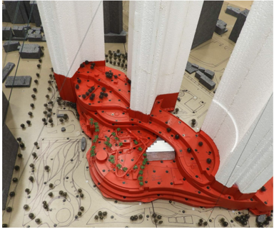

도시 경관, 쇼핑몰, 보행자 보행로 등 다양한 외부 공간에서 바람, 태양, 습도, 온도와 같은 환경 요소를 종합적으로 분석하여 사람들이 머물기 편안하고 안전한 외부 환경을 조성합니다. 사람들이 필요로 하는 위치에 그늘을 제공하고, 열이 집중되는 공간으로 바람을 유도하며, 고층 테라스에는 방풍 요소를 배치하는 등 풍동실험과 전산유체해석을 통한 설계적 대응방안을 통해 외부 공간의 쾌적성과 활용성을 향상할 수 있습니다. 이러한 환경 조성의 효과는 정확한 기상, 외부환경 데이터와 체계적인 분석에 기반한 공간계획을 통해 극대화될 수 있습니다. 프로젝트 내부와 주변에서 사람들이 실제로 체감하는 쾌적성을 정량적으로 평가하고, 외부 공간, 개발 단지, 경기장, 커뮤니티 등 프로젝트의 유형과 관계없이 보행자와 이용자에게 물리적으로 더 적합한 환경을 구현하는 것을 목표로 합니다. 이 서비스는 다음과 같은 전문 기술을 종합적으로 활용하여 수행됩니다.
이와 같이 도출된 방대한 분석 결과는 이해하기 쉬운 시각 자료로 정리되어, 설계 과정에서 개선이 필요한 지점을 직관적으로 확인할 수 있도록 제공됩니다. 또한 설계자, 건축가, 조경설계자, 소유주 등 관련 분야 전문가들과 협력하여 식별된 문제를 효과적으로 저감할 수 있는 실행 가능한 계획을 수립하도록 정보를 제공합니다. 이러한 분석과 계획을 통해 도시 환경에서 여러 건물이 상호작용하는 복합적인 조건을 체계적으로 관리하고, 냉각을 위한 미스트 분사와 같은 수동적·능동적 기법을 적절히 적용함으로써 외부 공간의 환경 개선 효과를 극대화할 수 있습니다. 나아가 보행자의 이용을 자연스럽게 유도하는 매력적인 외부 공간을 조성하고, 공기 흐름과 그늘을 조절하여 외부 공간의 물리적 환경을 실질적으로 개선할 수 있습니다. 이를 통해 공공 공간에서 이용자가 기대하는 쾌적한 공간 경험을 제공하고, 보행자와 이용자의 안전을 안정적으로 확보할 수 있습니다.
보행자 레벨의 바람 영향을 제어하기 위하여 배치된 수목은 단순한 미적 요소를 넘어서 보행자의 쾌적성과 안전성을 확보하기 위한 공학적인 수단이 됩니다. 여름철 해질 무렵 매일같이 건물 사이에서 발생하는 강한 돌풍을 완화할 수 있으며, 고층건물이 밀집한 구역에서의 빌딩풍을 저감하는 데 효과적입니다. 이러한 미기후에 대한 세심한 대응은 외부 공간의 사용성을 향상시키고, 보행자의 체류성과 보행 안전을 실질적으로 개선합니다.

부산 해운대 LCT 풍환경 평가 및 저감대책 수립